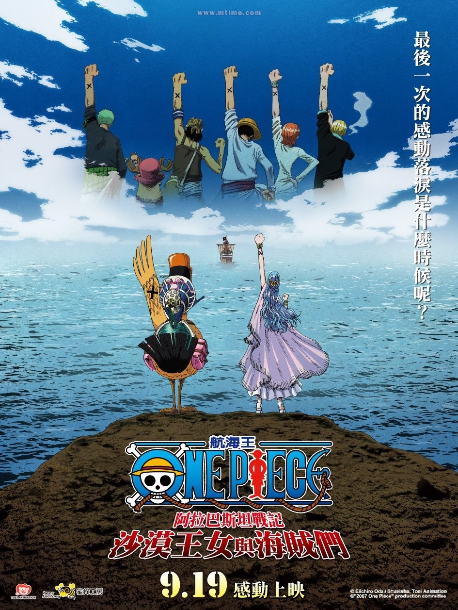
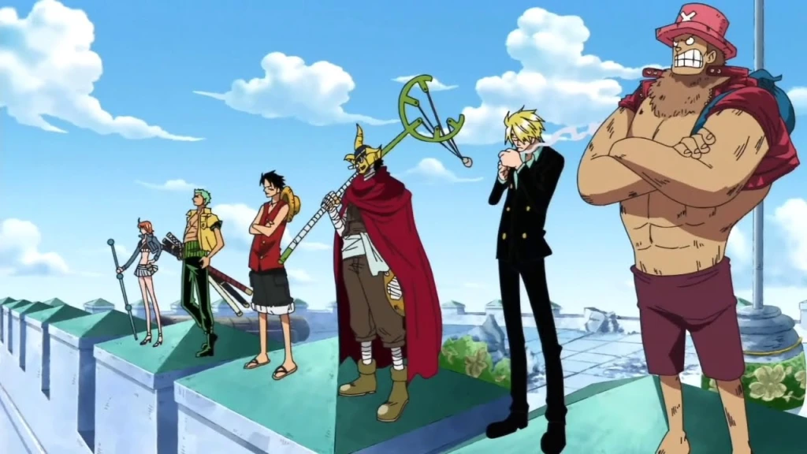
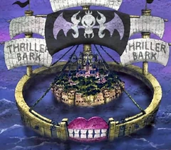
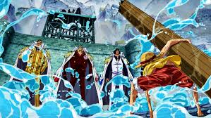
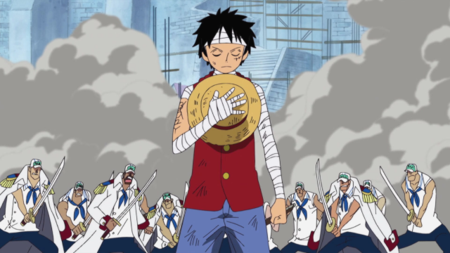
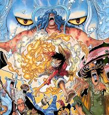
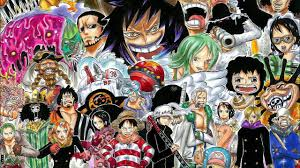
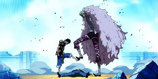
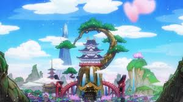
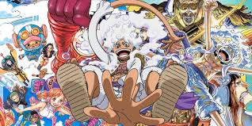

Los arcos de one piece explicados
Saga del East Blue
La serie comienza con la ejecución de Gol D. Roger, un hombre conocido como «El Rey de los Piratas» (海賊王 Kaizoku-Ō?), quien justo antes de su muerte, hace mención de su gran tesoro legendario, el One Piece (ワンピース Wan Pīsu?), y que puede ser tomado por quien lo encuentre. Esto marca el inicio de una era conocida como la Gran Era Pirata (大海賊時代 Daikaizokujidai?). Como resultado, un sinnúmero de piratas zarparon hacia Grand Line, el mar donde se encuentra dicho tesoro, con el objetivo de encontrarlo. Más de veinte años después de la muerte de Roger, el One Piece sigue sin ser encontrado. Un joven llamado Monkey D. Luffy, quien comió la Fruta Goma Goma, la cual le otorgó elasticidad, inspirado por la admiración de su sombrero de paja que desde su infancia le tiene al pirata legendario Shanks, comienza su aventura desde su hogar en el mar East Blue para encontrar el One Piece y autoproclamarse como el nuevo Rey de los Piratas. Con el fin de crear y convertirse en el capitán de una tripulación propia reclutando varios miembros para superar a la de Shanks, recluta durante su viaje en el East Blue a Roronoa Zoro, un infame espadachín y ex-cazarrecompensas, Nami, una navegante estafadora, Usopp, un francotirador mentiroso, y Sanji, un cocinero enamoradizo, además de conseguir un barco llamado el Going Merry. Tras viajar por varias islas en las que se enfrenta a varios enemigos, la tripulación llega a la entrada de Grand Line.

Saga de Arabasta
Después de llegar finalmente a la Grand Line, el grupo conoce en la entrada a Crocus, el guardián del faro y cuidador de Laboon, una gigantesca ballena. Él les da información para navegar por el mar y sobre Laugh Tale, la última isla donde Roger dejó el One Piece. También conocen a Nefertari Vivi, una princesa que desea salvar a su país, el Reino de Arabasta, de manos de una peligrosa organización criminal llamada Baroque Works, viajando ella y su pato mascota Karoo con la tripulación durante un tiempo. Durante su trayecto hacia Arabasta, los piratas pasan por Little Garden, una isla donde entablan amistad con dos gigantes Dorry y Brogy del lugar, y la Isla de Drum, una isla invernal donde invitan a un reno antropomórfico y médico llamado Tony Tony Chopper a unirse a la tripulación. Una vez que la tripulación llega hasta de Arabasta, comienzan una serie de batallas contra la organización Baroque Works y su líder, el Guerrero del Mar Sir Crocodile. Tras derrotarles y liberar al reino, la tripulación se despide de Vivi. Inmediatamente después, Nico Robin, una arqueóloga que antes pertenecía a Baroque Works como vicepresidenta, se une a la tripulación.
Saga Skypea
Poco después, queriendo buscar una ruta a la legendaria "Isla del Cielo", llegan a Jaya, una isla, donde conocen Marshal D. Teach, alias «Barbanegra», quien también aspira a convertirse en el Rey de los Piratas. La tripulación viaja hasta una isla del cielo llamada Skypiea, donde sin querer, se unen a una guerra incipiente entre dos tribus habitantes de dicho lugar, lo que los lleva a enfrentarse al líder de la isla, Enel, quien posee el poder de crear relámpagos y electricidad. Luffy logra derrotarlo y, con ello, terminar la guerra. También al abandonar la isla obtienen gran cantidad de oro, el cual deciden usarlo para reparar el Going Merry, y de paso encontrar un carpintero para arreglar futuros daños en el barco.

Saga de Water Seven
La saga comienza cuando los Sombrero de Paja llegan a Water 7, una ciudad acuática famosa por sus astilleros y carpinteros. Allí buscan reparar su barco, el Going Merry, que está en muy mal estado. Sin embargo, descubren que el barco ya no puede ser salvado, lo que genera un fuerte conflicto, especialmente con Usopp, quien termina separándose del grupo por no aceptar dejar atrás al Merry. Mientras tanto, Luffy intenta reclutar a un nuevo carpintero, Franky, sin saber que él está involucrado en un robo a la tripulación. En medio de estos conflictos, Robin desaparece misteriosamente, y pronto se revela que fue capturada por una organización secreta del Gobierno Mundial: CP9, cuyo objetivo es usarla para activar un arma ancestral. Para rescatar a Robin, la tripulación persigue a CP9 hasta Enies Lobby, una isla judicial del Gobierno donde se celebran juicios exprés. Allí se libra una de las guerras más importantes de la serie. Robin, en un momento de enorme carga emocional, grita “¡Quiero vivir!”, reafirmando su deseo de seguir con la tripulación, lo que marca un punto de quiebre para el grupo. Cada miembro lucha contra un agente de CP9, destacándose el combate entre Luffy y Lucci, el más poderoso del grupo enemigo. Luffy, tras un esfuerzo sobrehumano, lo derrota usando su Gear Second y Gear Third, habilidades nuevas que amplifican su poder y velocidad. Tras rescatar a Robin, los Sombrero de Paja escapan con la ayuda de la banda de Franky y el Going Merry, que milagrosamente llega una última vez para salvarlos antes de romperse definitivamente. La despedida del Merry es uno de los momentos más emotivos de la serie. Finalmente, Franky se une a la tripulación como carpintero, y Usopp regresa también, reconciliándose con Luffy. Al final de esta saga, Luffy obtiene una recompensa mucho mayor, y el grupo se convierte oficialmente en enemigo declarado del Gobierno Mundial. Es un arco que marca el crecimiento de los personajes y la declaración de guerra directa contra las instituciones del poder.
Saga de Thriller Bark
El arco de **Thriller Bark** comienza cuando los Sombrero de Paja llegan al Florian Triangle y se topan con un gigantesco barco-isla lleno de niebla, tumbas y criaturas extrañas: Thriller Bark. Allí se enfrentan a **Gecko Moria**, uno de los Shichibukai, que roba sombras usando su fruta Kage Kage no Mi para crear un ejército de zombis. Entre ellos está **Oars**, un enorme demonio revivido con la sombra de Luffy. En medio de la aventura conocen a **Brook**, un esqueleto viviente que busca recuperar su sombra y tiene una conexión con Laboon, la ballena del inicio de la serie. Mientras se enfrentan a enemigos como **Perona** y los zombis, la tripulación trabaja en equipo para derrotar a Oars y recuperar las sombras robadas. Luffy, usando sus Gears, vence a Moria en una batalla intensa. Justo cuando parece que todo ha terminado, aparece **Bartholomew Kuma**, otro Shichibukai, enviado por el Gobierno para eliminar a los Sombrero de Paja. Después de mostrar su poder abrumador, solo se detiene gracias al sacrificio de **Zoro**, quien absorbe todo el dolor de Luffy. Al final, Brook es invitado oficialmente a unirse a la tripulación como músico.
Saga de Marine Ford
Después de llegar al Archipiélago Sabaody, la tripulación se prepara para ingresar al Nuevo Mundo, la segunda mitad del Grand Line. Ahí, se hacen amigos de Silvers Rayleigh, el antiguo primer oficial de la tripulación de los Piratas de Roger, y le piden que recubra su barco para que puedan atravesar la Red Line por medio del subsuelo oceánico. Pero tras verse involucrados en una revuelta causada por un Noble Mundial, llega al lugar uno de los Siete Guerreros del Mar, Bartholomew Kuma, quien los separa enviándolos a diferentes lugares mediante sus poderes. Luffy llega a una isla afrodisíaca llamada Amazon Lily, donde únicamente la habitan mujeres, y gobernada por Boa Hancock, una de los Siete Guerreros del Mar, la cual acaba enamorandose de él. Una vez que el muchacho se entera de que su hermano adoptivo, Portgas D. Ace, se encuentra prisionero en Impel Down, Luffy emprende un viaje para liberarlo. Luffy logra soltar a otros prisioneros, como al hombre-pez y miembro de los Guerreros del Mar Jinbe, a quien encerraron tras negarse a colaborar con el Gobierno. Sin embargo, descubre que su hermano ya ha sido llevado a Marineford para ser ejecutado. Allí, una guerra estalla entre las fuerzas de la Marina y la tripulación del renombrado Edward Newgate, alias «Barbablanca». Al clímax de la batalla, Ace y Barbablanca son asesinados. Luffy lamenta la pérdida de Ace y se quiebra emocionalmente, al igual que la pérdida que vivió de pequeño con su otro hermano adoptivo, Sabo. Con la ayuda de Jinbe y a petición de Rayleigh, Luffy decide enviar a sus amigos el mensaje de esperar dos años hasta volver a encontrarse, pasando todos ellos por un intenso régimen de entrenamiento.
Saga PostMarine Ford
Después de la batalla de Marineford, Luffy está destruido emocionalmente por la muerte de Ace y la derrota sufrida. Sabiendo que es débil, decide que debe volverse mucho más fuerte si quiere proteger a sus amigos. Antes de separarse, envía una señal secreta para que su tripulación se reúna en dos años, mientras cada uno entrena por su cuenta en diferentes lugares. Este arco es clave porque marca el timeskip y la transición hacia una nueva etapa en la historia, donde los personajes vuelven con nuevas habilidades y objetivos.
Saga isla Gyojin
Los Sombrero de Paja se reúnen y llegan a la Isla Gyojin, un reino submarino donde conviven humanos y hombres-pez. Sin embargo, la isla está bajo la amenaza de Hody Jones y su grupo de extremistas que quieren iniciar una guerra racial contra los humanos. Luffy y su tripulación luchan para proteger la paz y la estabilidad de la isla. Este arco también sirve para profundizar en el pasado de los hombres-pez, revelar la existencia de Joy Boy y la princesa Shirahoshi, que es la actual Poseidón, una de las armas ancestrales. Se establece el tono para la importancia histórica y la conexión con el Siglo Vacío.
Saga Punk hazard
Después de salir de la Isla Gyojin, los Sombrero de Paja llegan a Punk Hazard, una isla dividida en dos mitades: una de fuego y otra de hielo. Allí descubren los terribles experimentos del científico Caesar Clown, quien crea armas químicas y criaturas peligrosas. En este arco Luffy se alía con Trafalgar Law, formando la alianza que tiene como objetivo derrocar a Kaido, uno de los Cuatro Emperadores. Punk Hazard también presenta a nuevos enemigos y sitúa a la historia en un plano más oscuro y complejo, donde la ciencia y la crueldad humana tienen un papel destacado.
Saga Dressrosa
Dressrosa es un reino gobernado por Donquixote Doflamingo, un Shichibukai corrupto que oprime a su pueblo mediante manipulación y violencia. La alianza entre Luffy y Law se pone a prueba en una guerra larga y compleja para derrocar a Doflamingo. Durante este arco, Luffy desarrolla su Gear 4, una nueva y poderosa transformación. También se presentan personajes secundarios muy importantes, como los gladiadores del coliseo, la tribu Tontatta y la relación entre Doflamingo y el mundo subterráneo. Dressrosa es un arco clave que combina acción, política y emociones profundas.
Saga de isla Zou
Los Sombrero de Paja llegan a Zou, una isla sobre la espalda de un elefante gigante llamado Zunesha. Allí conocen a los Minks, una tribu con fuertes lazos con el país de Wano. Este arco es breve pero fundamental para preparar el gran conflicto contra Kaido. Se revelan datos importantes sobre Momonosuke, heredero del clan Kozuki, y se establece la alianza entre piratas, samuráis y minks para enfrentarse a los Yonkou. Además, se muestra que Kaido está estrechamente vinculado con el destino de Wano y que la batalla final se acerca.
Saga de Wano
Wano es el arco más largo y ambicioso hasta ahora, con una ambientación inspirada en el Japón feudal. El país está bajo la tiranía de Kaido y Orochi, quienes oprimen a su pueblo. La alianza formada por los Sombrero de Paja, Law, Kid, los Minks y los samuráis de Wano se prepara para una guerra total con Kaido. En este arco se revelan leyendas antiguas, la historia de los Kozuki y la verdadera identidad de Luffy como la encarnación del “Sol Nika”. Luffy alcanza el Gear 5, su transformación más poderosa hasta ahora. La batalla final es épica y cambia el equilibrio mundial, marcando un antes y un después para todos.
Saga de Egghead
La aventura continúa en la isla Egghead, un lugar con tecnología avanzada donde reside el científico Vegapunk. En este arco, la Marina y el Gobierno Mundial lanzan ataques para capturar a Vegapunk y evitar que su tecnología cambie la balanza de poder. Nuevos personajes, como los Almirantes de la Marina y los Seraphim (humanoides modificados), aparecen como antagonistas. Este arco es la antesala a la conclusión de la saga y profundiza en los misterios del Siglo Vacío, el gobierno y el verdadero alcance del poder de los Sombrero de Paja.
